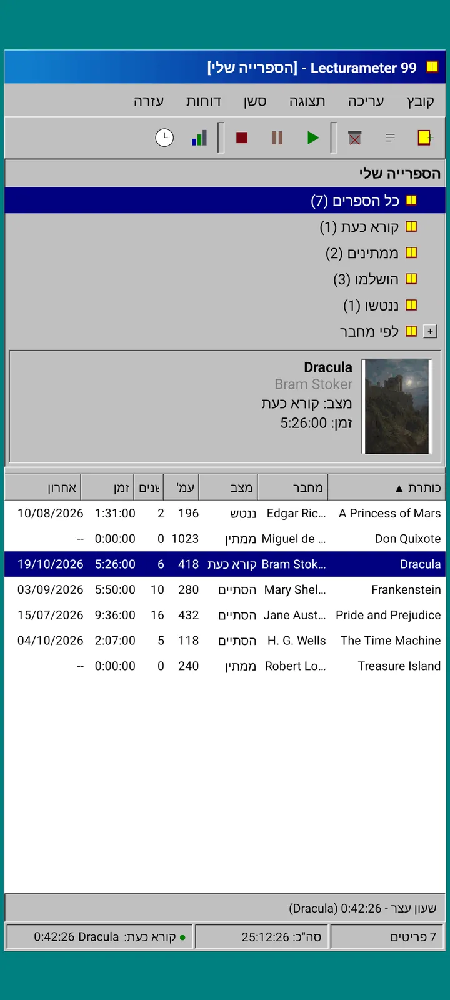
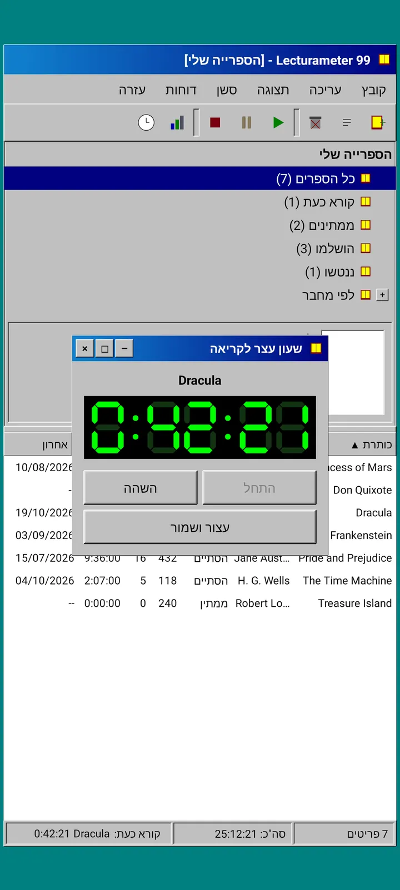
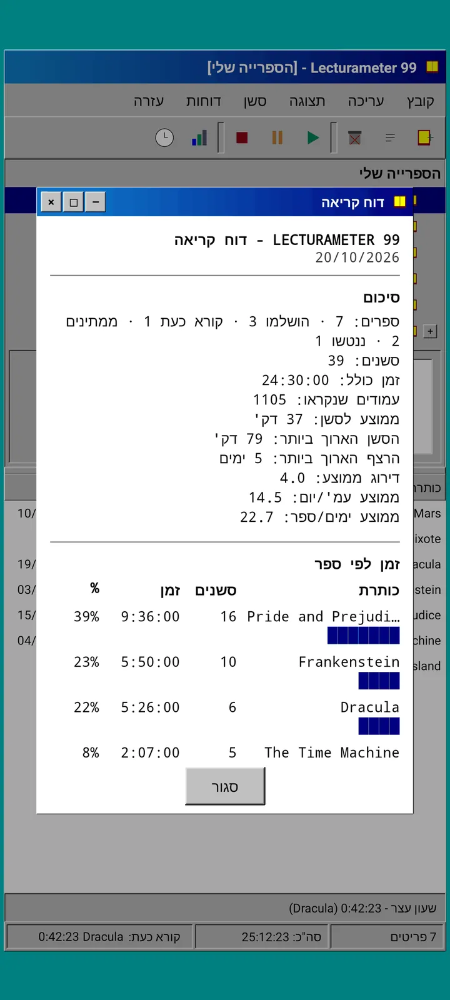
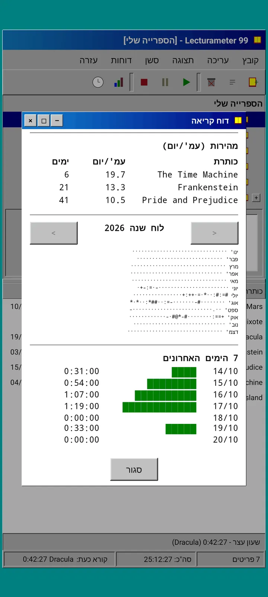
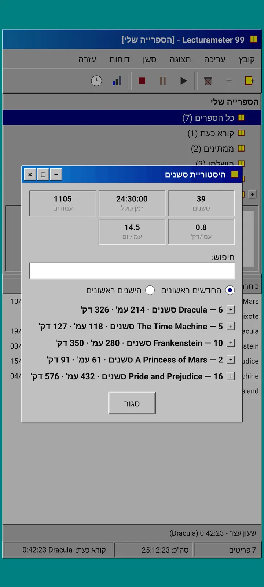
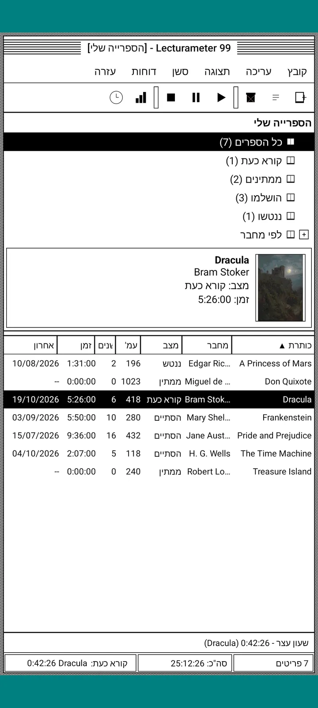
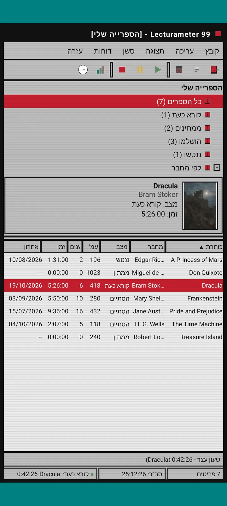
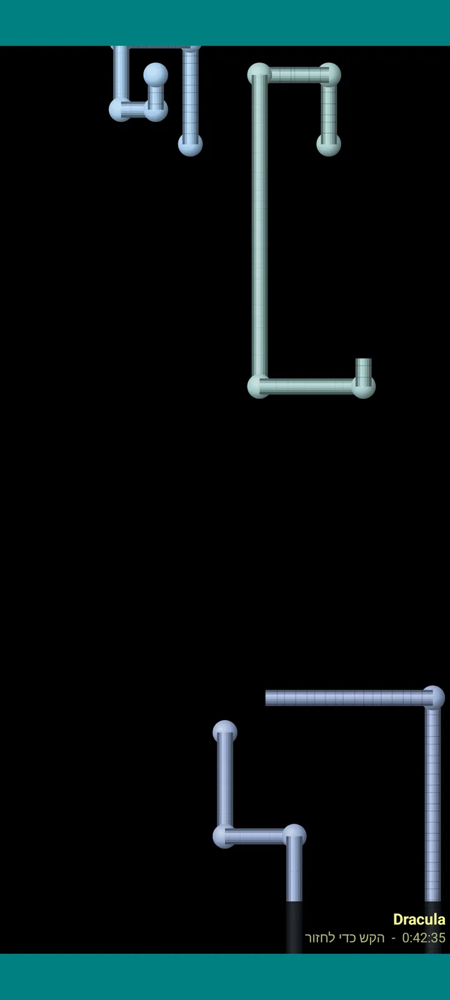

Lecturameter 99: יומן קריאה
Lecturameter כאילו התקנת אותו מתקליטור ב-1999. אפליקציה עצמאית, עם חלונות, תפריטים וטבלאות, שפותחת את הגיבויים האמיתיים שלך.
לשעבר Lecturameter 1999. ייתכן שהחנויות עדיין מציגות אותה בשם הזה: זו אותה אפליקציה.

מה זה
תוכנת שולחן עבודה מסוף שנות התשעים שרצה בטלפון שלך. חלון אחד מעל שולחן עבודה בצבע טורקיז, שורת תפריטים, סרגל כלים, עץ תיקיות, טבלה צפופה ושורת מצב.
- עץ הספרייה: כל הספרים, קורא כעת, ממתינים, הושלמו, ננטשו ולפי מחבר
- טבלה עם כותרת, מחבר, סטטוס, עמודים, סשנים, זמן וקריאה אחרונה. הקש על כותרת עמודה כדי למיין
- חיפוש ספרים אמיתי, עם אותו קטלוג ש-Lecturameter משתמשת בו
- מייבאת ומייצאת את הגיבוי של Lecturameter ואת ה-CSV של Goodreads. הנתונים שלך נכנסים ויוצאים בלי לאבד כלום

למה זה קיים
ניסוי: לבנות מחדש את הרעיון של Lecturameter מאפס לפי הנחות עיצוב שונות לחלוטין, בלי לגעת באפליקציה האמיתית. מכל הפרשנויות החדשות, זו של 1999 הייתה זו שהכי אהבתי, אז סיימתי אותה כתרגיל מהנה והפכתי אותה ללקוח מלא. היא פשוטה יותר מ-Lecturameter בכוונה: זה ניסוי, ובעיקרון לא יהיה לה פיתוח נוסף.
- שעון עצר בחלון צף עם צג LCD ירוק. אפשר להזיז אותו, למזער אותו לשורת המשימות, והוא ממשיך לספור בשורת המצב
- כשעוצרים, דיאלוג שמירת הסשן מאפשר לתעד אותו לפי עמודים, לפי אחוזים או לפי זמן בלבד, ומחשב את הקצב שלך בדיוק כמו Lecturameter
- הסשנים השמורים הם סשנים של Lecturameter: הם חוזרים לאפליקציה המודרנית אם תייצא גיבוי של Lecturameter 99 ותייבא אותו ב-Lecturameter.

דוח קריאה
הסטטיסטיקה היא דוח מודפס בטקסט ברוחב קבוע: סיכום, זמן לכל ספר עם פסי בלוקים ומהירות בעמודים ליום.

לוח שנה
כל יום בשנה מצויר כתו אחד לפי העמודים שקראת, ושבעת הימים האחרונים מתחת בפסי בלוקים.

היסטוריית סשנים
סשנים מקובצים לפי ספר בעץ עם פלוס ומינוס, וחמישה מספרים למעלה: סשנים, זמן כולל, עמודים, עמודים לדקה ועמודים ליום.
ערכות נושא
Classic 98 חינמי וברירת המחדל. החבילה מוסיפה עוד שישה באנדרואיד וארבעה באייפון, לכל אחד רקע וצלילים משלו.

בוחרים אותה מתפריט תצוגה
תצוגה, ערכת נושא... פותח חלון עם ערכות הנושא: שבע באנדרואיד וחמש באייפון. השינוי מגיע לכל החלונות, לטיימר ול-Pagi בבת אחת.
- קלאסי 98, חינמית וברירת המחדל: חלונות אפורים, פסי כותרת בכחול כהה ושולחן עבודה בצבע טורקיז
- חבילת ערכות נושא: 1984, Gumdrop, Memory, Towers, Core ו-8-bit. באייפון, בלי 1984 ו-Gumdrop
- כל ערכת נושא מגיעה עם רקע שולחן עבודה משלה וצלילים משלה להקשות, לחלונות ולשעון העצר
- תצוגה, צלילי ערכת נושא מכבה את הצלילים אם אתה קורא בשקט

קלאסי 98
חלונות אפורים, פסי כותרת בכחול כהה ושולחן עבודה בצבע טורקיז. חינמית, והאפליקציה נפתחת איתה.

1984
שולחן עבודה שחור-לבן של ביט אחד, עם תבניות נקודות וחלונות מרובעים. באנדרואיד בלבד.

סוכרייה
פלסטיק צבעוני שקוף למחצה, כפתורים מעוגלים ופסים ברקע. באנדרואיד בלבד.

זיכרון
התפריטים של קונסולת דיסקים משנות התשעים, בגוונים של כחול כהה.

מגדלים
עוד קונסולת דיסקים משנות התשעים, בכחול לילה עם קווים בכחול בהיר.

ליבה
קונסולה בשחור וירוק, כמו מסך שאף פעם לא נכבה.

8 ביט
פיקסלים שמנים, מעט צבעים ואותיות מרובעות.

נסה לפני שאתה משלם
הקש על ערכת נושא נעולה וכל האפליקציה מתחלפת אליה. אם תסגור בלי לקנות, ערכת הנושא הקודמת חוזרת.
שומרי מסך
הם מופיעים רק כששעון העצר רץ ואתה לא נוגע בטלפון. הם מחכים 1, 3 או 5 דקות, או אף פעם. הקשה אחת מחזירה אותך, ושעון העצר ממשיך לספור.

ספרים מעופפים
ספרי פיקסלים שמנפנפים בכריכות שלהם על פני מסך שחור.

שדה אותיות
אותיות מהרבה אלפביתים שחולפות לאט, כמו שדה כוכבים.

צינורות דפים
צינורות עשויים מדפים שמציירים את עצמם עד שהמסך מתמלא.

Pagi קופץ
Pagi קופץ מקצוות המסך.

שעון קריאה
זמן הסשן בספרות LCD גדולות.

Pagi 99 והתחפושות שלו
גם Pagi נוסע ל-1999: מפוקסל וחופשי על המסך, כמו העוזרים המשרדיים של אז. גוררים אותו, הוא מדבר כשנוגעים בו ומציג את הטיפים בבועות צהובות. יש לו שמונה תחפושות, שבוחרים ב"תצוגה, התחפושת של Pagi...", ואפשר לנסות אותן לפני התשלום.
- נגן קלטות
- כובע מצחייה הפוך
- משקפי 3D
- משקפי שמש ניאון
- דיסקט ביד
- מעיל עור
- חיית מחמד בכיס
- כתר קרטון
חנות
האפליקציה חינמית ומלאה לתיעוד הקריאה שלך. מה שאפשר לקנות משנה רק את המראה שלה.
כל האפליקציה, בלי הגבלת זמן.
- ספרייה, חיפוש, שעון עצר וסשנים
- דוח קריאה והיסטוריית סשנים
- סשנים ידניים ושמורים לפי עמודים, לפי אחוזים או לפי זמן
- טיפ היום ושליחת משוב מתפריט עזרה
- גיבוי של Lecturameter ו-CSV של Goodreads, פנימה והחוצה
- ערכת הנושא קלאסי 98 ו-Pagi 99
- בלי חשבון ובלי פרסומות
תשלומים חד-פעמיים, בלי מנויים.
- חבילת ערכות נושא, €3.49: 6 ערכות נושא עם רקע וצלילים, וגם שומרי המסך
- שומרי מסך, €1.99: 5 שומרי המסך
- תחפושות ל-Pagi, €1.99: 8 התחפושות
- כל ה-Lecturameter 99, €4.49: ערכות נושא, שומרי מסך ותחפושות
באנדרואיד בלבד: טיפים אופציונליים בתפריט עזרה, אם בא לך לכבד אותי בקפה.
באייפון אין טיפים ואין ערכות נושא 1984 ו-Gumdrop (Apple לא מאפשרת אותן); כל השאר זהה.
אפשר לנסות ערכות נושא ותחפושות בזמן אמת לפני שמשלמים. אם תסגור בלי לקנות, מה שהיה לך חוזר.
מה שונה לעומת Lecturameter
כמו ב-Lecturameter
- אותם נתונים: ספרים, סשנים, סטטוסים, דירוגים והערות. קובץ הגיבוי זהה בשתי האפליקציות.
- חיפוש ספרים לפי כותרת או מחבר.
- שעון עצר אמיתי: הוא ממשיך לספור ברקע וגם אם תסגור את האפליקציה.
- בלי חשבון ובלי פרסומות. משתמשת באינטרנט רק לחיפוש ספרים ואם משאירים אותם פועלים, גם לסטטיסטיקות שימוש פסאודונימיות ודוחות קריסה (אפשר לכבות אותם ב"עזרה, פרטיות").
- זמינה ב-50 שפות.
רק במהדורת Lecturameter 99
- ממשק שולחן עבודה של 1999. בלי Material.
- חלונות אמיתיים: גוררים אותם, ממזערים אותם וסוגרים אותם עם האיקס.
- דוח קריאה בטקסט, עם לוח שנה שמצויר בתווים.
- תפריט הקשר בלחיצה ארוכה וקיצורי מקלדת אם מחברים מקלדת.
- Pagi 99 מפוקסל עם בועות טיפים.
- ערכות נושא לבחירה עם רקע וצלילים משלהן, שומרי מסך בזמן ששעון העצר רץ ותחפושות ל-Pagi.
מה שאין בה, בכוונה
- בלי Pro ובלי מנוי. תיעוד הקריאה כולו בחינם, והחנות מוכרת רק מראה.
- בלי אתגרים, בינגו, Wrapped שנתי או ווידג׳טים.
- בלי סשן סוחף, צלילי אווירה או גיבוי ב-Google Drive. הגיבוי נשמר כקובץ.
להשיג אותה
Lecturameter 99 חינמית וזמינה לאייפון ולאנדרואיד.
קרא את הפוסט בבלוג כדי לראות מאיפה היא באה ולמה לצפות.